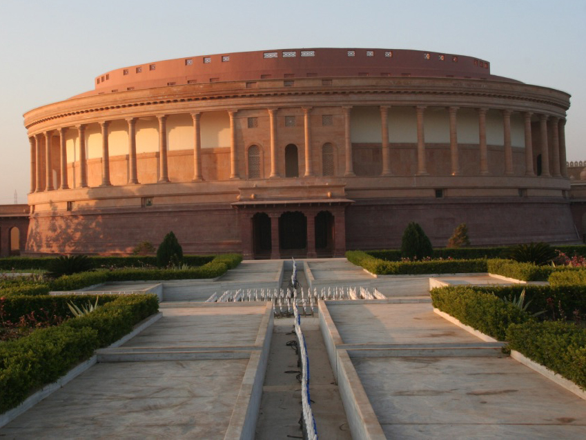

-

-
About Vande Mataram
The Vande Mataram Memorial is a unique national Monument seeking to immortalise the most momentous episodes in India’s freedom struggle from British Rule. Vande Mataram uses a combination of art, architecture and technology to create an immersive experience which helps us re-live the journey to independence first-hand. India’s journey to independence and the sacrifices of our countrymen to attain it cannot simply be relegated to the pages of history; they need to be experienced, to be re-lived and to echo in our hearts and souls for eternity – that is what the Vande Mataram Memorial has set out to achieve. Vande Mataram is a once-in-lifetime and a must-do experience for every Indian who is keen to reconnect with his roots and who seeks to renew and restore his sense of national pride and belonging. The Vande Mataram Memorial is located over a 12 acre complex at Bhuj, Gujarat and is a non-profit initiative of the Ashapura Group; the primary structure of the museum admeasuring over 100,000 square feet is modelled on the likeness of the “Sansad Bhavan” (the Indian Parliament Building) and was constructed over 4 years with a mélange of inputs from prominent historians, architects, sculptors and artists.